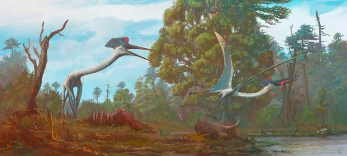
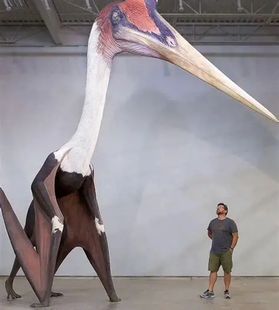

![original_logo[DinoSpace]](img/hop.png)

The Quztacoatlus was initially discovered in 1971 by Douglas A. Lawson at the Big Bend National Park in Texas whilst conducting geological fieldwork for his masters thesis. What he found was a large hollow wing bone fragment that was later identified by Dr. Wann Langston Jr as part of a Pterosaurus wing, though massive in comparison to previous bone fragments discovered and could be more accurately compared to those of pigeons.


How do fossils form and what can they tell us about prehistoric life? Visit this page to learn more about fossilisation and how bone turns to stone over time.
Learn More
Easily one of the greatest beings of the prehistoric era, learn more about the amazing Quezlacoatlus Northropi and how it lived in our world!.
Learn More
Learn about the fascinating story behind the Quezlacoatlus Northropi's discovery and what it reveals about prehistoric life, and how it changed our understanding of the prehistoric world.
Learn More
Discover the diverse world of pterosaurs, including the mighty Quezlacoatlus Northropi and other incredible species that ruled the skies during the prehistoric era.
Learn More{kind=link}